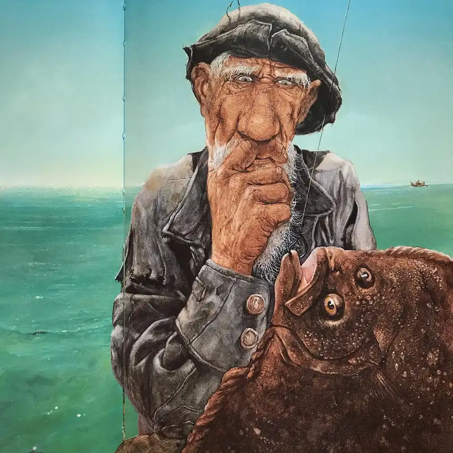
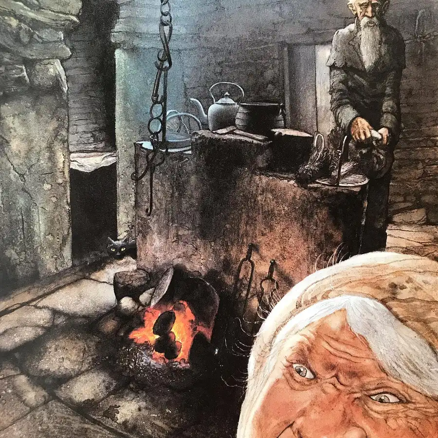
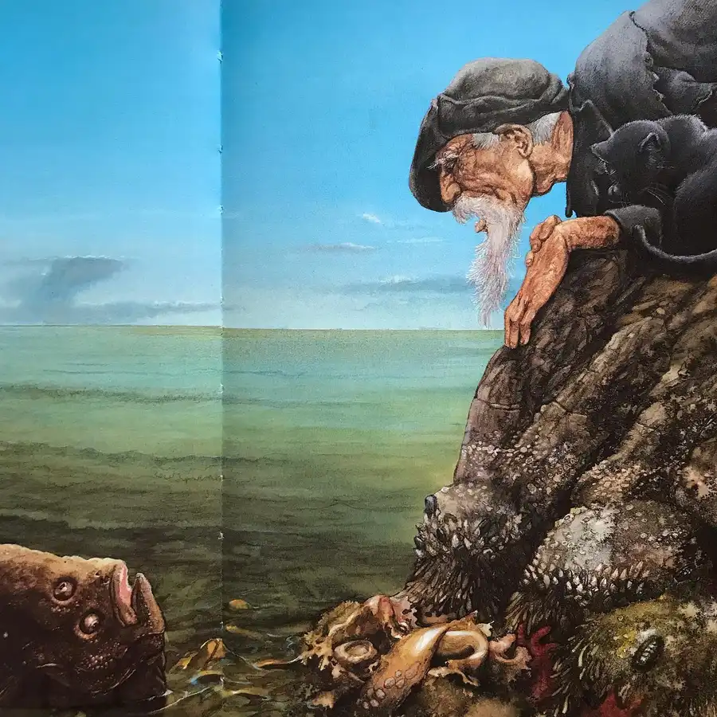
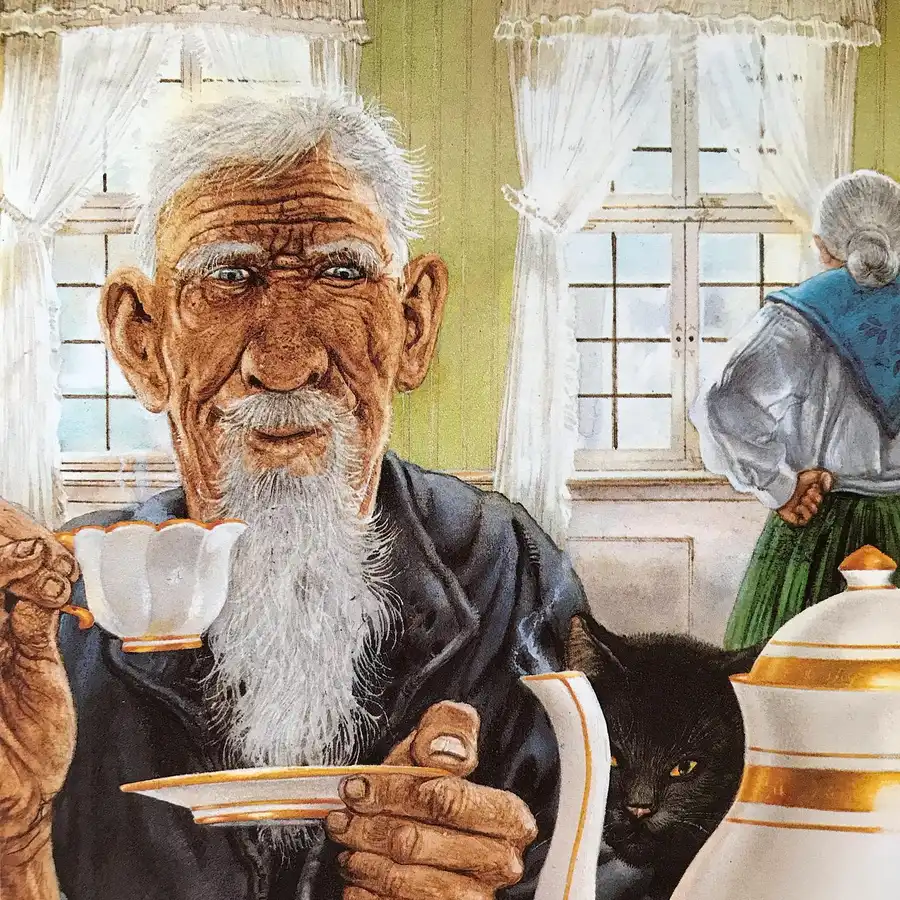
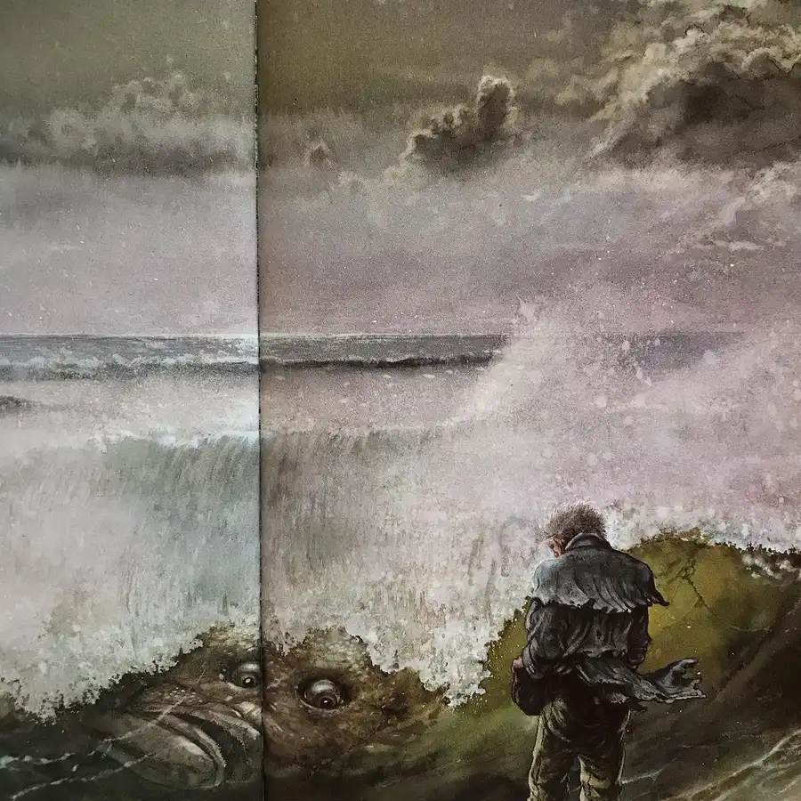
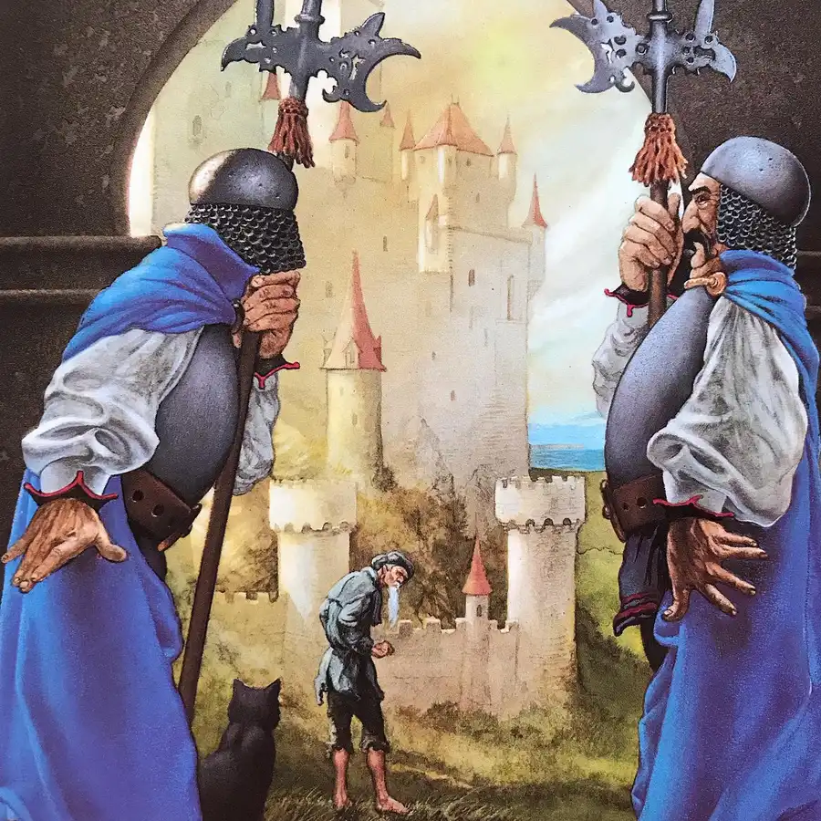
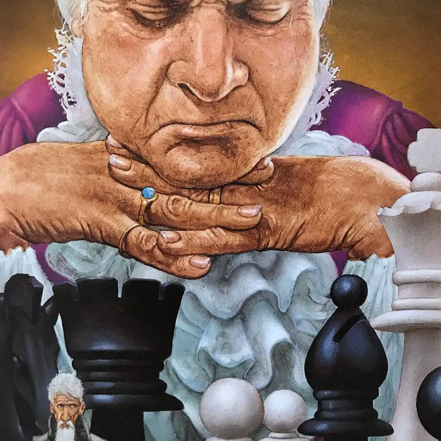
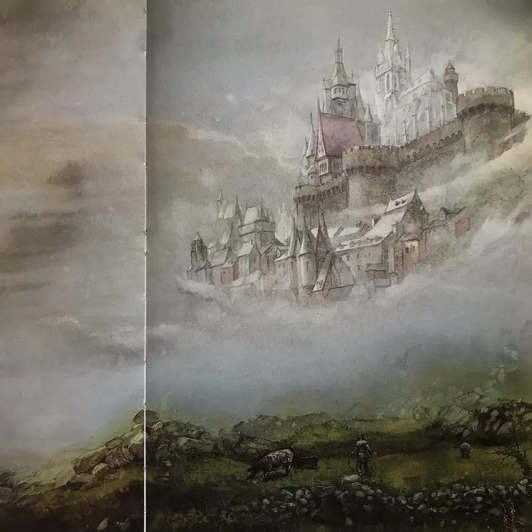
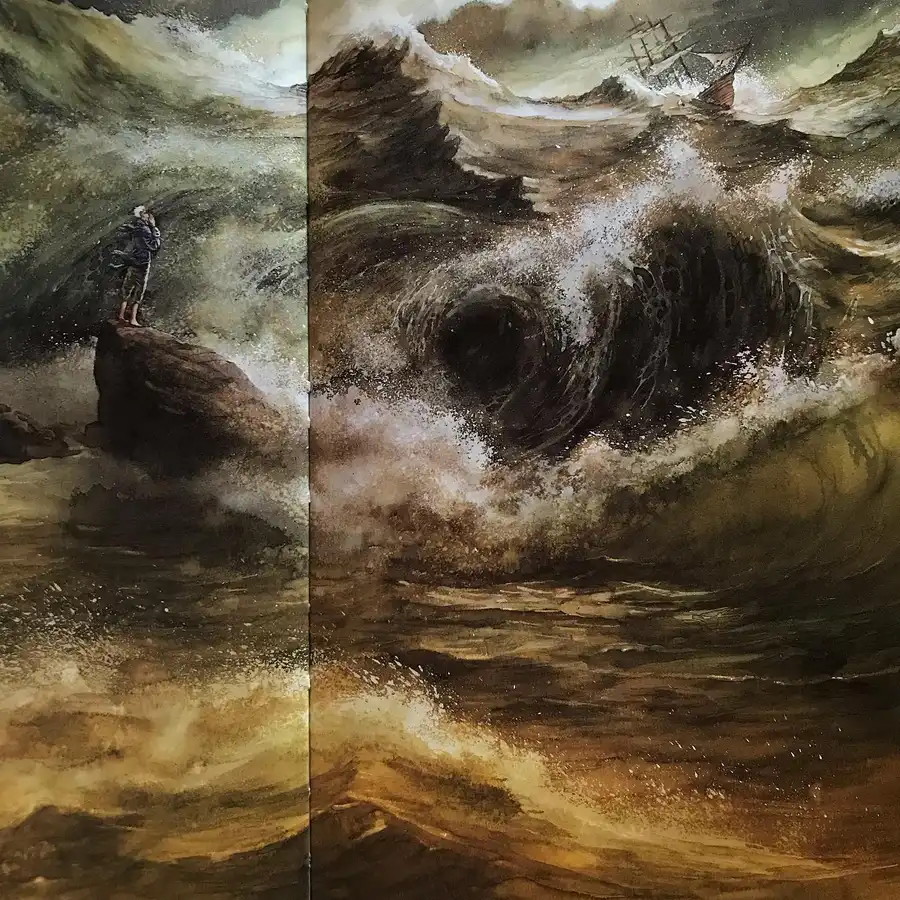

Let me entertain you with The Fisherman & His Wife, a Brothers Grimm adaptation with art by John Howe. An old married couple lives in a tiny hut by the sea. One day the man, fishing for supper, catches a flounder and finds to his surprise that it can talk. Awed by the creature’s miraculous ability, he returns it to the water. His wife, however, angrily orders him to take advantage of the situation by returning to the water and asking the magical creature to change their hut into a cottage. The flounder obliges, and the wife proceeds to issue a series of increasingly outlandish demands: she wants to live in a castle, then she wants to be king, then emperor, then pope. Finally, she insists on becoming a god, with power over the rising of the sun and moon. With that as the last straw, the fish strips the couple of all their marvelous possessions and leaves them sitting in the hut where they started. With sweeping tableaux and dramatic compositions, Howe creates a sense of grandeur in his illustrations. He playfully depicts the fisherman as growing smaller and smaller in the face of his domineering wife, who in turn looms larger and larger with all the power she amasses. A note for folklore enthusiasts: this edition, like most English translations of the tale, tastefully labels the initial dwelling a “hut”. However, the German term used by the Brothers Grimm, “pisputt”, would be directly calqued as the memorably earthy “piss pot”. #fisherman #wife #fish #hut #cottage #castle #king #god #magic #book #books #childrensbooks #picturebook #picturebooks #picturebookillustration #picturebookart #childrensbookillustration #childrensliterature #illustration #kidlit #kidsbooks #bookworm #booklover #booklovers #bibliophile #bookstagram #bookstagrammer #bookstagrammers #instabook #instabooks









